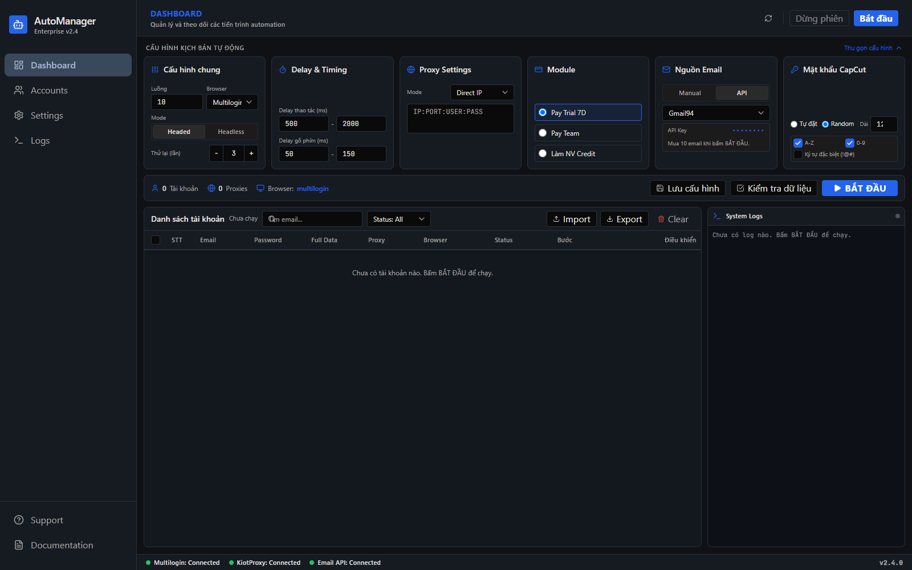
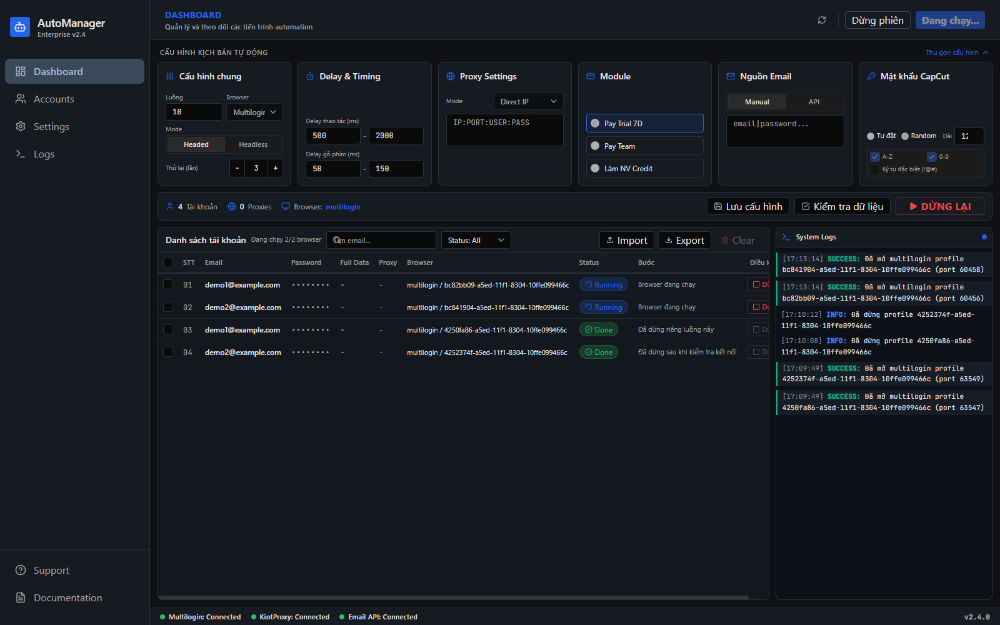
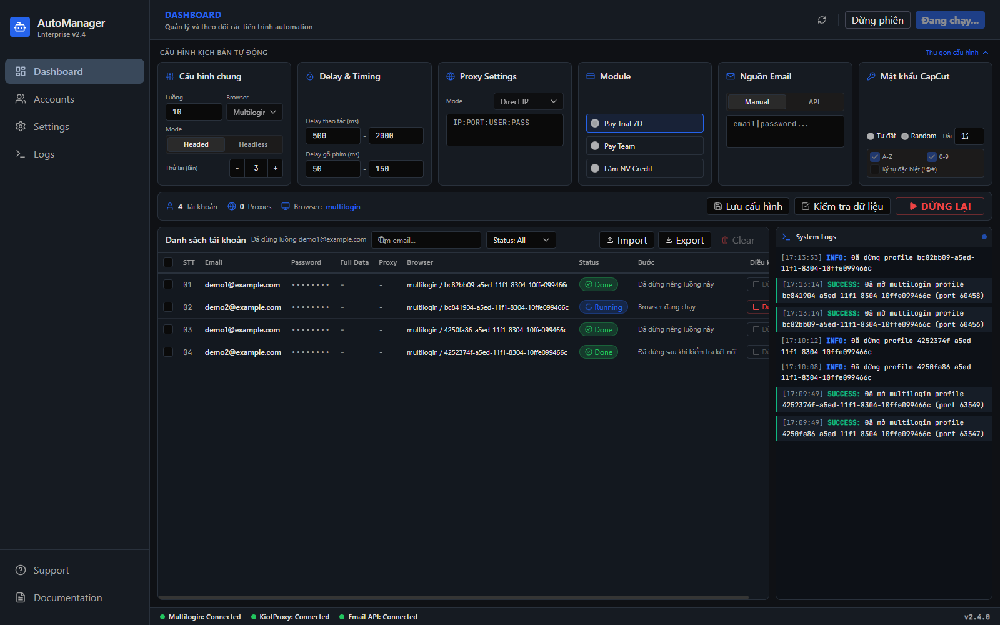
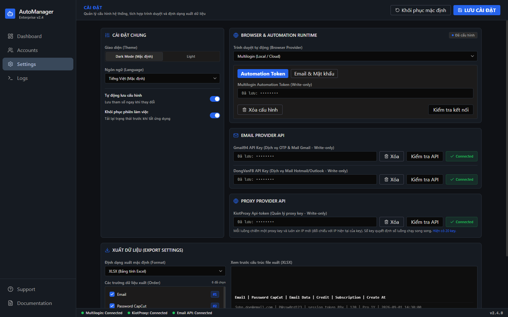
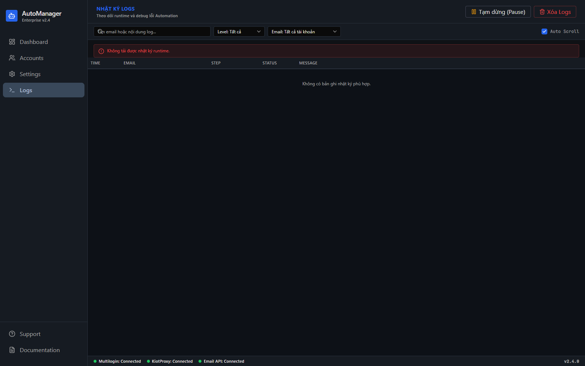

<title>Tích hợp API AutoManager</title>
<link rel="preconnect" href="https://fonts.googleapis.com">
<link rel="preconnect" href="https://fonts.gstatic.com" crossorigin>
<link rel="stylesheet" href="https://fonts.googleapis.com/css2?family=Archivo:wght@500;600;700&family=IBM+Plex+Sans:wght@400;500;600&family=JetBrains+Mono:wght@400;500;700&display=swap">
<style>
  /* Dark-first: the product it documents is dark-mode default. */
  :root {
    --ground: #0F1115;
    --panel: #15181E;
    --panel-2: #1A1E26;
    --rule: #262B34;
    --rule-soft: #1E232B;
    --ink: #E5E2E1;
    --ink-dim: #9099A8;
    --ink-faint: #6B7484;
    --accent: #3B82F6;
    --accent-ink: #A9C7FF;
    --accent-wash: rgba(59, 130, 246, 0.10);
    --pass: #10B981;
    --warn: #F59E0B;
    --fail: #EF4444;
    --pass-wash: rgba(16, 185, 129, 0.10);
    --warn-wash: rgba(245, 158, 11, 0.10);
    --fail-wash: rgba(239, 68, 68, 0.10);
    --shadow: 0 1px 2px rgba(0, 0, 0, 0.5);

    --step--1: 0.8125rem;
    --step-0: 0.9375rem;
    --step-1: 1.0625rem;
    --step-2: 1.375rem;
    --step-3: 1.875rem;
    --step-4: 2.625rem;

    --display: 'Archivo', 'Segoe UI', system-ui, sans-serif;
    --body: 'IBM Plex Sans', 'Segoe UI', system-ui, sans-serif;
    --mono: 'JetBrains Mono', ui-monospace, 'Cascadia Mono', monospace;

    color-scheme: dark;
  }

  @media (prefers-color-scheme: light) {
    :root:not([data-theme="dark"]) {
      --ground: #F6F7F9;
      --panel: #FFFFFF;
      --panel-2: #F0F2F6;
      --rule: #DDE2E9;
      --rule-soft: #E9EDF2;
      --ink: #12151B;
      --ink-dim: #596273;
      --ink-faint: #7C8494;
      --accent: #1D4ED8;
      --accent-ink: #1D4ED8;
      --accent-wash: rgba(29, 78, 216, 0.07);
      --pass: #047857;
      --warn: #B45309;
      --fail: #B91C1C;
      --pass-wash: rgba(4, 120, 87, 0.08);
      --warn-wash: rgba(180, 83, 9, 0.08);
      --fail-wash: rgba(185, 28, 28, 0.08);
      --shadow: 0 1px 2px rgba(15, 17, 21, 0.08);
      color-scheme: light;
    }
  }

  :root[data-theme="light"] {
    --ground: #F6F7F9;
    --panel: #FFFFFF;
    --panel-2: #F0F2F6;
    --rule: #DDE2E9;
    --rule-soft: #E9EDF2;
    --ink: #12151B;
    --ink-dim: #596273;
    --ink-faint: #7C8494;
    --accent: #1D4ED8;
    --accent-ink: #1D4ED8;
    --accent-wash: rgba(29, 78, 216, 0.07);
    --pass: #047857;
    --warn: #B45309;
    --fail: #B91C1C;
    --pass-wash: rgba(4, 120, 87, 0.08);
    --warn-wash: rgba(180, 83, 9, 0.08);
    --fail-wash: rgba(185, 28, 28, 0.08);
    --shadow: 0 1px 2px rgba(15, 17, 21, 0.08);
    color-scheme: light;
  }

  * { box-sizing: border-box; }

  body {
    margin: 0;
    background: var(--ground);
    color: var(--ink);
    font-family: var(--body);
    font-size: var(--step-0);
    line-height: 1.62;
    -webkit-font-smoothing: antialiased;
  }

  .wrap {
    max-width: 1060px;
    margin: 0 auto;
    padding: 0 28px 96px;
  }

  .measure { max-width: 68ch; }

  h1, h2, h3 {
    font-family: var(--display);
    text-wrap: balance;
    margin: 0;
    line-height: 1.15;
  }

  p { margin: 0; }

  a { color: var(--accent-ink); text-decoration-thickness: 1px; text-underline-offset: 2px; }
  a:focus-visible, button:focus-visible { outline: 2px solid var(--accent); outline-offset: 2px; }

  code, .mono { font-family: var(--mono); font-variant-ligatures: none; }

  code {
    font-size: 0.88em;
    background: var(--panel-2);
    border: 1px solid var(--rule-soft);
    border-radius: 3px;
    padding: 0.1em 0.34em;
  }

  .eyebrow {
    font-family: var(--mono);
    font-size: 0.6875rem;
    font-weight: 500;
    letter-spacing: 0.14em;
    text-transform: uppercase;
    color: var(--ink-faint);
  }

  section { margin-top: 64px; }

  .sec-head {
    display: flex;
    flex-direction: column;
    gap: 10px;
    padding-bottom: 18px;
    border-bottom: 1px solid var(--rule);
    margin-bottom: 28px;
  }

  .sec-head h2 { font-size: var(--step-2); font-weight: 600; letter-spacing: -0.015em; }
  .sec-head p { color: var(--ink-dim); font-size: var(--step-0); max-width: 68ch; }

  .stack { display: flex; flex-direction: column; }
  .gap-8 { gap: 8px; } .gap-12 { gap: 12px; } .gap-16 { gap: 16px; }
  .gap-24 { gap: 24px; } .gap-32 { gap: 32px; }

  /* ---- masthead ---- */
  .masthead {
    border-bottom: 1px solid var(--rule);
    background: linear-gradient(180deg, var(--panel) 0%, var(--ground) 100%);
  }
  .masthead-inner {
    max-width: 1060px;
    margin: 0 auto;
    padding: 52px 28px 36px;
    display: flex;
    flex-direction: column;
    gap: 22px;
  }
  .brandline { display: flex; align-items: center; gap: 12px; flex-wrap: wrap; }
  .mark {
    width: 26px; height: 26px; border-radius: 6px;
    background: var(--accent);
    display: grid; place-items: center;
    font-family: var(--mono); font-size: 0.75rem; font-weight: 700; color: #fff;
  }
  .brandline .name { font-family: var(--display); font-weight: 600; letter-spacing: -0.01em; }
  .brandline .sep { color: var(--ink-faint); }
  .brandline .meta { font-family: var(--mono); font-size: var(--step--1); color: var(--ink-dim); }

  h1 { font-size: var(--step-4); font-weight: 700; letter-spacing: -0.03em; max-width: 24ch; }
  .lede { color: var(--ink-dim); font-size: var(--step-1); max-width: 66ch; }

  /* ---- verdict tiles ---- */
  .verdict {
    display: grid;
    grid-template-columns: repeat(auto-fit, minmax(150px, 1fr));
    gap: 1px;
    background: var(--rule);
    border: 1px solid var(--rule);
    border-radius: 8px;
    overflow: hidden;
    margin-top: 8px;
  }
  .tile { background: var(--panel); padding: 16px 18px; display: flex; flex-direction: column; gap: 6px; }
  .tile .k { font-family: var(--mono); font-size: 0.6875rem; letter-spacing: 0.1em; text-transform: uppercase; color: var(--ink-faint); }
  .tile .v { font-family: var(--display); font-size: var(--step-2); font-weight: 700; letter-spacing: -0.02em; font-variant-numeric: tabular-nums; }
  .tile .n { font-size: var(--step--1); color: var(--ink-dim); }
  .tile.ok .v { color: var(--pass); }

  /* ---- pills ---- */
  .pill {
    display: inline-flex; align-items: center; gap: 6px;
    font-family: var(--mono); font-size: 0.6875rem; font-weight: 500;
    letter-spacing: 0.04em; text-transform: uppercase;
    padding: 3px 8px; border-radius: 999px; border: 1px solid;
    white-space: nowrap;
  }
  .pill.pass { color: var(--pass); border-color: color-mix(in srgb, var(--pass) 35%, transparent); background: var(--pass-wash); }
  .pill.warn { color: var(--warn); border-color: color-mix(in srgb, var(--warn) 35%, transparent); background: var(--warn-wash); }
  .pill.fail { color: var(--fail); border-color: color-mix(in srgb, var(--fail) 35%, transparent); background: var(--fail-wash); }
  .pill.info { color: var(--accent-ink); border-color: color-mix(in srgb, var(--accent) 35%, transparent); background: var(--accent-wash); }
  .pill.mute { color: var(--ink-dim); border-color: var(--rule); background: var(--panel-2); }
  .dot { width: 6px; height: 6px; border-radius: 50%; background: currentColor; }

  /* ---- tables ---- */
  .table-scroll { overflow-x: auto; border: 1px solid var(--rule); border-radius: 8px; background: var(--panel); }
  table { width: 100%; border-collapse: collapse; font-size: var(--step--1); }
  th, td { text-align: left; padding: 11px 14px; border-bottom: 1px solid var(--rule-soft); vertical-align: top; }
  thead th {
    font-family: var(--mono); font-size: 0.6875rem; font-weight: 500;
    letter-spacing: 0.1em; text-transform: uppercase; color: var(--ink-faint);
    background: var(--panel-2); border-bottom: 1px solid var(--rule);
    position: sticky; top: 0;
  }
  tbody tr:last-child td { border-bottom: none; }
  td.mono, th.mono { font-family: var(--mono); font-variant-numeric: tabular-nums; }
  td .sub { display: block; color: var(--ink-dim); margin-top: 3px; }

  /* ---- finding cards: the stripe encodes real blast radius ---- */
  .finding {
    background: var(--panel);
    border: 1px solid var(--rule);
    border-left: 3px solid var(--rule);
    border-radius: 6px;
    padding: 20px 22px;
    display: flex; flex-direction: column; gap: 14px;
  }
  .finding.blocker { border-left-color: var(--fail); }
  .finding.major { border-left-color: var(--warn); }
  .finding-top { display: flex; align-items: baseline; justify-content: space-between; gap: 16px; flex-wrap: wrap; }
  .finding h3 { font-size: var(--step-1); font-weight: 600; letter-spacing: -0.01em; }
  .finding dl { display: grid; grid-template-columns: 92px 1fr; gap: 8px 16px; margin: 0; }
  .finding dt {
    font-family: var(--mono); font-size: 0.6875rem; letter-spacing: 0.08em;
    text-transform: uppercase; color: var(--ink-faint); padding-top: 3px;
  }
  .finding dd { margin: 0; font-size: var(--step--1); color: var(--ink); }
  .finding dd.dim { color: var(--ink-dim); }

  pre {
    margin: 0; padding: 12px 14px;
    background: var(--panel-2);
    border: 1px solid var(--rule-soft);
    border-radius: 5px;
    overflow-x: auto;
    font-family: var(--mono); font-size: 0.78rem; line-height: 1.6;
    color: var(--ink-dim);
  }
  pre b { color: var(--ink); font-weight: 500; }
  pre .g { color: var(--pass); }
  pre .r { color: var(--fail); }
  pre .y { color: var(--warn); }

  /* ---- evidence figures ---- */
  figure { margin: 0; display: flex; flex-direction: column; gap: 10px; }
  figure img {
    display: block; width: 100%; height: auto;
    border: 1px solid var(--rule); border-radius: 8px;
    background: var(--panel-2);
  }
  figcaption { font-size: var(--step--1); color: var(--ink-dim); }
  figcaption b { color: var(--ink); font-weight: 600; }

  /* ---- misc blocks ---- */
  .note {
    background: var(--panel); border: 1px solid var(--rule);
    border-radius: 6px; padding: 16px 18px;
    display: flex; flex-direction: column; gap: 8px;
    font-size: var(--step--1);
  }
  .note .hd { font-family: var(--display); font-weight: 600; font-size: var(--step-0); }
  .note.caution { border-color: color-mix(in srgb, var(--warn) 30%, var(--rule)); background: var(--warn-wash); }

  ul.clean { margin: 0; padding-left: 1.1em; display: flex; flex-direction: column; gap: 7px; }
  ul.clean li { padding-left: 2px; }
  ul.clean li::marker { color: var(--ink-faint); }

  .layers { display: grid; gap: 1px; background: var(--rule); border: 1px solid var(--rule); border-radius: 8px; overflow: hidden; }
  .layer { background: var(--panel); padding: 14px 18px; display: grid; grid-template-columns: 132px 1fr; gap: 18px; align-items: baseline; }
  .layer .lb { font-family: var(--mono); font-size: 0.6875rem; letter-spacing: 0.08em; text-transform: uppercase; color: var(--accent-ink); }
  .layer .ld { font-size: var(--step--1); color: var(--ink-dim); }
  .layer .ld b { color: var(--ink); font-weight: 500; font-family: var(--mono); font-size: 0.95em; }

  footer {
    margin-top: 72px; padding-top: 24px; border-top: 1px solid var(--rule);
    font-size: var(--step--1); color: var(--ink-faint);
    display: flex; justify-content: space-between; gap: 16px; flex-wrap: wrap;
  }

  @media (max-width: 640px) {
    .masthead-inner { padding: 36px 20px 28px; }
    .wrap { padding: 0 20px 72px; }
    h1 { font-size: var(--step-3); }
    .finding dl { grid-template-columns: 1fr; gap: 4px 0; }
    .finding dt { padding-top: 8px; }
    .layer { grid-template-columns: 1fr; gap: 6px; }
  }

  @media (prefers-reduced-motion: reduce) {
    * { animation: none !important; transition: none !important; }
  }
</style>

<header class="masthead">
  <div class="masthead-inner">
    <div class="brandline">
      <span class="mark">AM</span>
      <span class="name">AutoManager</span>
      <span class="sep">/</span>
      <span class="meta">v2.4.0 &middot; Electron 35 &middot; Windows 11</span>
    </div>

    <h1>Móc nối API thật, bỏ toàn bộ mock data</h1>

    <p class="lede">
      Bốn nhà cung cấp &mdash; Multilogin, KiotProxy, Gmail94, DongVanFB &mdash; đã chạy thật
      từ UI xuống API. Quá trình kiểm thử với API thật tìm ra <strong>8 lỗi</strong>, trong đó
      5 lỗi khiến tool không thể chạy hoặc mất tiền. Tất cả đã sửa và verify lại.
    </p>

    <div class="verdict">
      <div class="tile ok">
        <span class="k">Unit + integration</span>
        <span class="v">451</span>
        <span class="n">38 file, 0 fail</span>
      </div>
      <div class="tile ok">
        <span class="k">API thật</span>
        <span class="v">8/8</span>
        <span class="n">4 provider + CDP</span>
      </div>
      <div class="tile ok">
        <span class="k">Typecheck</span>
        <span class="v">Clean</span>
        <span class="n">tsc --noEmit</span>
      </div>
      <div class="tile ok">
        <span class="k">Lint</span>
        <span class="v">0</span>
        <span class="n">error &amp; warning</span>
      </div>
      <div class="tile ok">
        <span class="k">Electron</span>
        <span class="v">PASS</span>
        <span class="n">harness 100%</span>
      </div>
    </div>
  </div>
</header>

<main class="wrap">

<section>
  <div class="sec-head">
    <span class="eyebrow">Yêu cầu &rarr; bàn giao</span>
    <h2>Bạn yêu cầu gì, đã có gì</h2>
    <p>Mỗi dòng là một yêu cầu bạn nói ra, kèm nơi nó được hiện thực và trạng thái verify.</p>
  </div>

  <div class="table-scroll">
    <table>
      <thead>
        <tr>
          <th style="width:31%">Yêu cầu</th>
          <th style="width:44%">Đã làm</th>
          <th style="width:15%">Verify</th>
          <th style="width:10%">Trạng thái</th>
        </tr>
      </thead>
      <tbody>
        <tr>
          <td>Xoá toàn bộ mock data trong UI</td>
          <td>Xoá <code>src/renderer/mocks/</code>. Dashboard, Accounts, Logs đọc SQLite qua IPC.
            <span class="sub">3 controller mới: dashboard, accounts, logs</span></td>
          <td class="mono">app thật</td>
          <td><span class="pill pass"><span class="dot"></span>Xong</span></td>
        </tr>
        <tr>
          <td>Móc API thật vào chức năng UI</td>
          <td>4 provider + 8 service + 11 IPC channel + preload bridge
            <span class="sub">Multilogin, KiotProxy, Gmail94, DongVanFB</span></td>
          <td class="mono">8/8 live</td>
          <td><span class="pill pass"><span class="dot"></span>Xong</span></td>
        </tr>
        <tr>
          <td>Dashboard: chọn API thì ẩn textarea, hiện API key đã config</td>
          <td>Panel &ldquo;Nguồn Email&rdquo; đổi sang select provider + API key đã mask + &ldquo;Mua N email khi bấm BẮT ĐẦU&rdquo;</td>
          <td class="mono">ảnh 1</td>
          <td><span class="pill pass"><span class="dot"></span>Xong</span></td>
        </tr>
        <tr>
          <td>Multilogin: đăng nhập lấy JWT + refresh token, lưu DB</td>
          <td><code>/user/signin</code> (password hash MD5) &rarr; lưu mã hoá bằng safeStorage, tự refresh trong cửa sổ 30 phút, fallback signin khi refresh chết</td>
          <td class="mono">live + 12 test</td>
          <td><span class="pill pass"><span class="dot"></span>Xong</span></td>
        </tr>
        <tr>
          <td>Multilogin dùng quick profile, xong là tắt, không lưu profile</td>
          <td><code>/api/v3/profile/quick</code> &rarr; giữ &rarr; <code>/profile/stop/p/:id</code>. Không lưu profile trên workspace.</td>
          <td class="mono">ảnh 2, 3</td>
          <td><span class="pill pass"><span class="dot"></span>Xong</span></td>
        </tr>
        <tr>
          <td>KiotProxy: luôn xin IP mới, đối chiếu <code>/get-current</code>, key bận thì chờ</td>
          <td><code>ProxyLeaseManager</code>: đọc IP hiện tại &rarr; xin IP mới &rarr; trùng thì đổi key &rarr; hết key rảnh thì chờ. Không 2 profile cùng IP.</td>
          <td class="mono">15 test</td>
          <td><span class="pill pass"><span class="dot"></span>Xong</span></td>
        </tr>
        <tr>
          <td>Gmail94 đọc OTP, DongVanFB đọc OAuth2/Graph</td>
          <td>Gmail94 lưu <code>order_id</code>. DongVanFB lưu <code>Email|Pass|RefreshToken|ClientId</code> mã hoá, đọc code OAuth2 rồi fallback Graph.</td>
          <td class="mono">live (đã mua thật)</td>
          <td><span class="pill pass"><span class="dot"></span>Xong</span></td>
        </tr>
        <tr>
          <td>Bấm Bắt đầu chạy đúng số browser đã config, chạy rồi tắt</td>
          <td>Mở đúng <code>threadCount</code> browser, giữ 10 giây kiểm tra kết nối, rồi tắt từng cái.</td>
          <td class="mono">ảnh 2, 4</td>
          <td><span class="pill pass"><span class="dot"></span>Xong</span></td>
        </tr>
        <tr>
          <td>Dừng thì chỉ dừng profile của luồng đó</td>
          <td><code>run.stopThread(accountId)</code> + nút <em>Dừng</em> mỗi dòng. Xoá hẳn <code>stop_all</code> khỏi codebase.</td>
          <td class="mono">ảnh 3</td>
          <td><span class="pill pass"><span class="dot"></span>Xong</span></td>
        </tr>
        <tr>
          <td>Móc đầy đủ API vào Settings</td>
          <td>Thêm panel <em>Proxy Provider API</em> (KiotProxy trước đây không có ô nhập). Nút &ldquo;Kiểm tra API&rdquo; gọi API thật và cache trạng thái + số dư.</td>
          <td class="mono">ảnh 5</td>
          <td><span class="pill pass"><span class="dot"></span>Xong</span></td>
        </tr>
        <tr>
          <td>File <code>.env.example</code> để test</td>
          <td><code>.env.example</code> + <code>npm run verify:providers</code>. Thao tác tốn tiền nằm sau cờ riêng, mặc định tắt.</td>
          <td class="mono">8/8 live</td>
          <td><span class="pill pass"><span class="dot"></span>Xong</span></td>
        </tr>
        <tr>
          <td>GoLogin, GPM, Camoufox, Patchright</td>
          <td>Chưa làm theo đúng thứ tự ưu tiên bạn đặt. Chọn browser đó sẽ báo lỗi rõ ràng thay vì im lặng.</td>
          <td class="mono">&mdash;</td>
          <td><span class="pill mute">Để sau</span></td>
        </tr>
      </tbody>
    </table>
  </div>
</section>

<section>
  <div class="sec-head">
    <span class="eyebrow">Phần quan trọng nhất</span>
    <h2>8 lỗi chỉ lộ ra khi gọi API thật</h2>
    <p>
      Trước khi có credentials, cả 4 provider &ldquo;compile sạch, test xanh&rdquo; nhưng
      <strong>không cái nào chạy được</strong>. Đây là danh sách lỗi thật, kèm bằng chứng từ API.
      Vạch màu bên trái là mức nghiêm trọng thật: đỏ = tool không dùng được hoặc mất tiền.
    </p>
  </div>

  <div class="stack gap-16">

    <article class="finding blocker">
      <div class="finding-top">
        <h3>Multilogin không trả <code>port</code> khi mở quick profile</h3>
        <span class="pill fail"><span class="dot"></span>Chặn hoàn toàn</span>
      </div>
      <dl>
        <dt>Hiện tượng</dt>
        <dd>Mọi lần mở browser đều fail: <em>&ldquo;Multilogin không trả về profile id hoặc port&rdquo;</em>.</dd>
        <dt>Nguyên nhân</dt>
        <dd>Postman mẫu có <code>"port": "55579"</code>, nhưng launcher 12.11.0 thật <strong>không</strong> trả port ở response start. Code bắt buộc phải có port nên throw.</dd>
        <dt>Bằng chứng</dt>
        <dd><pre>POST /api/v3/profile/quick  <span class="g">200</span>
{"data":{"browser_type":"mimic","core_version":151,
         "id":"51590a68-…","is_quick":true}}   <span class="r">← không có "port"</span></pre></dd>
        <dt>Đã sửa</dt>
        <dd class="dim"><code>port</code> thành nullable, chỉ <code>profileId</code> là bắt buộc. Port đọc sau từ <code>/profile/quick/statuses</code>.</dd>
      </dl>
    </article>

    <article class="finding blocker">
      <div class="finding-top">
        <h3>Không có <code>automation</code> thì launcher không mở cổng CDP</h3>
        <span class="pill fail"><span class="dot"></span>Chặn automation</span>
      </div>
      <dl>
        <dt>Hiện tượng</dt>
        <dd>Chờ 60 giây không có debug port nào &rarr; Playwright không thể attach vào browser.</dd>
        <dt>Nguyên nhân</dt>
        <dd>Launcher chỉ publish remote-debugging port khi profile được start <strong>kèm automation type</strong>. Trước đó app không gửi tham số này.</dd>
        <dt>Bằng chứng</dt>
        <dd><pre>không có automation  &rarr; <span class="r">port: null</span> (chờ 60s vẫn null)
automation=playwright &rarr; <span class="g">port: 60873</span> &rarr; CDP Chrome/151 &rarr; attach OK</pre></dd>
        <dt>Đã sửa</dt>
        <dd class="dim">Runtime luôn start với <code>automation: 'playwright'</code>, rồi poll statuses để lấy port. Log hiện port thật.</dd>
      </dl>
    </article>

    <article class="finding blocker">
      <div class="finding-top">
        <h3>KiotProxy báo 0 key dù tài khoản có 20 key</h3>
        <span class="pill fail"><span class="dot"></span>Chặn hoàn toàn</span>
      </div>
      <dl>
        <dt>Hiện tượng</dt>
        <dd>Mọi luồng fail: <em>&ldquo;Tài khoản KiotProxy không có proxy key nào&rdquo;</em>.</dd>
        <dt>Nguyên nhân</dt>
        <dd>Key nằm ở field <code>value</code>, không phải <code>key</code>. Parser tìm sai tên nên loại bỏ hết mọi dòng.</dd>
        <dt>Bằng chứng</dt>
        <dd><pre>GET /api/public/keys  <span class="g">200</span>
{"id":"d8efcc33-…", <b>"value"</b>:"K48fbd08e…",
 "status":"ACTIVE","deleted":false,"expirationAt":1788288342390}</pre></dd>
        <dt>Đã sửa</dt>
        <dd class="dim">Đọc <code>value</code>, nhận id dạng uuid, đổi <code>expirationAt</code> (epoch ms) sang ISO, và loại key <code>deleted</code> hoặc không <code>ACTIVE</code>.</dd>
      </dl>
    </article>

    <article class="finding blocker">
      <div class="finding-top">
        <h3>DongVanFB trừ tiền nhưng app báo &ldquo;không có tài khoản nào&rdquo;</h3>
        <span class="pill fail"><span class="dot"></span>Mất tiền</span>
      </div>
      <dl>
        <dt>Hiện tượng</dt>
        <dd>Mua email thành công phía server, tiền bị trừ, nhưng app throw và <strong>bỏ mất dữ liệu mailbox</strong>.</dd>
        <dt>Nguyên nhân</dt>
        <dd><code>list_data</code> nằm <strong>trong</strong> <code>data</code>, không ở top level như tài liệu.</dd>
        <dt>Bằng chứng</dt>
        <dd><pre>GET /user/buy?type=full  <span class="g">200</span>
{"error_code":200,"status":true,
 "data":{"order_code":…,"price":…,
         <b>"list_data"</b>:["email|pass|refresh|client"]}}   <span class="y">← lồng trong data</span></pre></dd>
        <dt>Đã sửa</dt>
        <dd class="dim">Đọc <code>data.list_data</code>, vẫn tương thích top-level, và xử lý cả khi <code>list_data</code> là một string nhiều dòng.</dd>
      </dl>
    </article>

    <article class="finding blocker">
      <div class="finding-top">
        <h3>Refresh token chết là app kẹt vĩnh viễn</h3>
        <span class="pill fail"><span class="dot"></span>Chết sau vài giờ</span>
      </div>
      <dl>
        <dt>Hiện tượng</dt>
        <dd>3/3 luồng fail: <em>&ldquo;Multilogin làm mới token thất bại (HTTP 400)&rdquo;</em> &mdash; dù app vẫn có email + password hợp lệ.</dd>
        <dt>Nguyên nhân</dt>
        <dd>Multilogin <strong>rotate refresh token mỗi lần signin</strong>, nên đăng nhập ở nơi khác là token đang lưu chết ngay. Nó trả HTTP <strong>400</strong> (không phải 401) &rarr; map thành <code>CONFIG_ERROR</code> &rarr; nhánh fallback signin chỉ bắt <code>AUTH_ERROR</code> nên không chạy.</dd>
        <dt>Vì sao nặng</dt>
        <dd>Đây là lỗi làm tool chết dần trong lúc chạy thật, không phải lỗi lúc test.</dd>
        <dt>Đã sửa</dt>
        <dd class="dim">Refresh fail vì <em>bất kỳ</em> lý do mà còn password &rarr; signin lại. Chỉ throw khi không có password.</dd>
      </dl>
    </article>

    <article class="finding major">
      <div class="finding-top">
        <h3>Đang chạy nhưng bảng tài khoản trống</h3>
        <span class="pill warn"><span class="dot"></span>Feature không dùng được</span>
      </div>
      <dl>
        <dt>Hiện tượng</dt>
        <dd>Log hiện 2 browser đã mở, header ghi &ldquo;Đang chạy 2/2&rdquo;, nhưng grid ghi <em>&ldquo;Chưa có tài khoản nào&rdquo;</em> và đếm <code>0 Tài khoản</code>.</dd>
        <dt>Nguyên nhân</dt>
        <dd>Controller chỉ tải lại danh sách account khi run <code>stopped</code> / <code>failed</code>. Đang chạy thì không refresh &rarr; không thấy dòng nào &rarr; <strong>nút &ldquo;Dừng&rdquo; từng luồng không thể bấm</strong>.</dd>
        <dt>Đã sửa</dt>
        <dd class="dim">Refresh grid theo mọi progress event. Dòng xuất hiện ngay khi luồng khởi chạy.</dd>
      </dl>
    </article>

    <article class="finding blocker">
      <div class="finding-top">
        <h3>Luồng nhiều hơn proxy key thì treo rồi fail</h3>
        <span class="pill fail"><span class="dot"></span>Deadlock</span>
      </div>
      <dl>
        <dt>Hiện tượng</dt>
        <dd>Với 20 key mà chạy 30 luồng: 20 luồng chạy được, 10 luồng còn lại chờ đúng 120 giây rồi fail hàng loạt.</dd>
        <dt>Nguyên nhân</dt>
        <dd>Cả 30 luồng cùng xin proxy trong một <code>Promise.all</code>. Key chỉ được nhả ở bước teardown, mà teardown chỉ chạy <em>sau khi</em> toàn bộ luồng đã khởi chạy &rarr; 10 luồng chờ một điều không bao giờ tới.</dd>
        <dt>Đã sửa</dt>
        <dd class="dim">Chạy theo worker pool đúng bằng số key khả dụng. Mỗi luồng đi hết vòng đời (xin proxy &rarr; mở browser &rarr; giữ &rarr; tắt &rarr; nhả proxy) rồi worker nhận luồng tiếp theo trong hàng đợi.</dd>
        <dt>Kiểm chứng</dt>
        <dd class="dim">
          5 unit test + <strong>7 integration test chạy qua ProxyLeaseManager thật và SQLite thật</strong>
          (5 luồng / 2 key, 4 luồng / 1 key): mọi luồng đều chạy, số lease đồng thời không bao giờ vượt số key,
          6 luồng nhận 6 IP khác nhau, mọi lease đều được nhả. Trả lại code cũ thì 5/7 test đỏ ngay.
        </dd>
      </dl>
    </article>

    <article class="finding major">
      <div class="finding-top">
        <h3>Không có API dừng theo luồng</h3>
        <span class="pill warn"><span class="dot"></span>Thiếu tính năng</span>
      </div>
      <dl>
        <dt>Hiện tượng</dt>
        <dd>Chỉ có <code>run.stop()</code> dừng cả phiên. Mỗi thread vẫn giữ <code>profileId</code> riêng nhưng không có cách tác động vào một thread.</dd>
        <dt>Đã sửa</dt>
        <dd class="dim">
          Thêm <code>activeThreads</code> map theo accountId, <code>shutdownThread()</code>, <code>stopThread(accountId)</code>,
          <code>getRunningThreads()</code>, IPC <code>run:stop-thread</code> + <code>run:threads</code>, và nút <em>Dừng</em> mỗi dòng.
          <code>stopAllQuickProfiles</code> bị xoá hẳn, có test chặn không cho nó quay lại.
        </dd>
      </dl>
    </article>

  </div>
</section>

<section id="evidence">
  <div class="sec-head">
    <span class="eyebrow">Bằng chứng</span>
    <h2>Ảnh từ app đang chạy</h2>
    <p>Chụp trực tiếp từ Electron thật, launcher Multilogin thật, SQLite thật &mdash; không phải mockup.</p>
  </div>
  <div class="stack gap-32" id="figures">

    <figure>
      
      <figcaption>
        <b>Ảnh 1 &mdash; Nguồn Email chuyển sang API.</b>
        Textarea nhập email biến mất, thay bằng select provider, dòng <span class="mono">API Key ••••••••</span>
        lấy từ Settings, và câu &ldquo;Mua 10 email khi bấm BẮT ĐẦU&rdquo; đúng theo số luồng đang cấu hình.
        Thanh dưới cùng: Multilogin, KiotProxy, Email API đều <span class="mono">Connected</span>.
      </figcaption>
    </figure>

    <figure>
      
      <figcaption>
        <b>Ảnh 2 &mdash; Đang chạy 2 luồng thật.</b>
        Hai dòng <span class="mono">Running</span> kèm profile id Multilogin thật, cột <em>Bước</em> ghi
        &ldquo;Browser đang chạy&rdquo;, nút <em>Dừng</em> mỗi dòng đang bật. Hai dòng dưới là phiên trước đã
        <span class="mono">Done</span>. Log bên phải stream thật kèm port: <span class="mono">port 60458</span>, <span class="mono">port 60456</span>.
      </figcaption>
    </figure>

    <figure>
      
      <figcaption>
        <b>Ảnh 3 &mdash; Dừng riêng một luồng.</b>
        <span class="mono">demo1</span> &rarr; <span class="mono">Done</span> / &ldquo;Đã dừng riêng luồng này&rdquo;, nút Dừng tắt.
        <span class="mono">demo2</span> vẫn <span class="mono">Running</span>, nút Dừng vẫn bật. Log chỉ ghi một dòng dừng
        đúng profile <span class="mono">bc82bb09</span>. Không có profile nào khác bị ảnh hưởng.
      </figcaption>
    </figure>

    <figure>
      
      <figcaption>
        <b>Ảnh 4 &mdash; Settings sau khi kiểm tra API thật.</b>
        Gmail94, DongVanFB, KiotProxy đều <span class="mono">Connected</span> &mdash; trạng thái này đến từ lần gọi API thật,
        không phải nhãn cứng. Panel <em>Proxy Provider API</em> là panel mới (trước đây KiotProxy không có chỗ nhập token)
        và đang báo <em>Hiện có 20 key</em> đọc từ tài khoản thật.
      </figcaption>
    </figure>

    <figure>
      
      <figcaption>
        <b>Ảnh 5 &mdash; Logs đọc từ SQLite.</b>
        Cùng một model log với panel Live Logs ở Dashboard, ghi theo lô trong transaction để không chặn Main process.
      </figcaption>
    </figure>

  </div>

</section>

<section>
  <div class="sec-head">
    <span class="eyebrow">Kiến trúc</span>
    <h2>Đường đi của dữ liệu</h2>
    <p>Secret chỉ tồn tại trong Main process. Renderer nhận cờ boolean và chuỗi đã mask, không bao giờ nhận giá trị thật.</p>
  </div>

  <div class="layers">
    <div class="layer">
      <span class="lb">Renderer</span>
      <span class="ld">3 controller thuần TypeScript (<b>dashboard</b>, <b>accounts</b>, <b>logs</b>) &mdash; test được không cần DOM. View chỉ render.</span>
    </div>
    <div class="layer">
      <span class="lb">Preload</span>
      <span class="ld">Bridge gõ kiểu chặt: 11 kênh invoke + 3 kênh push. Không expose <b>ipcRenderer</b> thô.</span>
    </div>
    <div class="layer">
      <span class="lb">IPC</span>
      <span class="ld">Mọi payload validate bằng zod trước khi vào service. Lỗi normalize thành mã chuẩn.</span>
    </div>
    <div class="layer">
      <span class="lb">Service</span>
      <span class="ld"><b>AutomationRunService</b>, <b>ProxyLeaseManager</b>, <b>EmailPurchaseService</b>, <b>MultiloginAuthService</b>, <b>LogBus</b>, <b>AccountService</b></span>
    </div>
    <div class="layer">
      <span class="lb">Provider</span>
      <span class="ld">4 adapter vendor + 4 probe kết nối. Parse phòng thủ, không tự bịa field khi response lạ.</span>
    </div>
    <div class="layer">
      <span class="lb">Hạ tầng</span>
      <span class="ld">SQLite WAL + 3 migration &middot; safeStorage &middot; <b>purchased_emails</b>, <b>proxy_leases</b></span>
    </div>
  </div>

  <div class="stack gap-12" style="margin-top:24px">
    <div class="note">
      <span class="hd">Luật proxy KiotProxy</span>
      <span>
        Mỗi luồng chiếm một key và luôn xin IP mới. IP mới được đối chiếu với IP hiện tại của key
        (<code>/get-current</code>): trùng nghĩa là key chưa xoay &rarr; đổi sang key khác. Hết key rảnh thì luồng chờ.
        Hai profile không bao giờ giữ cùng một IP; IP đã nhả ra thì dùng lại được &mdash; không có blacklist vĩnh viễn.
      </span>
    </div>
    <div class="note">
      <span class="hd">Vòng đời một luồng</span>
      <span class="mono" style="font-size:0.78rem;color:var(--ink-dim)">
        mua/parse email &rarr; tạo account (mật khẩu CapCut mã hoá) &rarr; xin proxy &rarr;
        mở quick profile (automation=playwright) &rarr; đọc debug port &rarr; giữ 10s &rarr;
        tắt <em>đúng</em> profile đó &rarr; nhả <em>đúng</em> proxy đó
      </span>
    </div>
  </div>
</section>

<section>
  <div class="sec-head">
    <span class="eyebrow">Verify lần cuối &middot; 01/09/2026</span>
    <h2>Chạy lại toàn bộ</h2>
    <p>Thao tác tốn tiền bị tắt trong lần verify này, nên các bài mua email hiện <em>skip</em> chứ không phải fail.</p>
  </div>

  <div class="table-scroll">
    <table>
      <thead>
        <tr>
          <th style="width:34%">Lệnh</th>
          <th style="width:44%">Kết quả</th>
          <th style="width:22%">Trạng thái</th>
        </tr>
      </thead>
      <tbody>
        <tr>
          <td class="mono">npx vitest run</td>
          <td>451 test / 39 file, 0 fail</td>
          <td><span class="pill pass"><span class="dot"></span>PASS</span></td>
        </tr>
        <tr>
          <td class="mono">npx tsc --noEmit</td>
          <td>Không lỗi</td>
          <td><span class="pill pass"><span class="dot"></span>PASS</span></td>
        </tr>
        <tr>
          <td class="mono">npm run lint</td>
          <td>0 error, 0 warning (<code>--max-warnings 0</code>)</td>
          <td><span class="pill pass"><span class="dot"></span>PASS</span></td>
        </tr>
        <tr>
          <td class="mono">npm run build</td>
          <td>renderer + main + preload build xong</td>
          <td><span class="pill pass"><span class="dot"></span>PASS</span></td>
        </tr>
        <tr>
          <td class="mono">npm run test:electron</td>
          <td>better-sqlite3 ABI, safeStorage, renderer isolation, preload bridge</td>
          <td><span class="pill pass"><span class="dot"></span>100%</span></td>
        </tr>
        <tr>
          <td class="mono">verify:providers &mdash; Multilogin</td>
          <td>signin OK &middot; 1 workspace folder &middot; launcher v12.11.0 &middot; mở rồi tắt quick profile</td>
          <td><span class="pill pass"><span class="dot"></span>PASS</span></td>
        </tr>
        <tr>
          <td class="mono">verify:providers &mdash; KiotProxy</td>
          <td>ngoduc123 &middot; balance 1.830.000 &middot; <strong>20 key</strong> &middot; đọc IP hiện tại</td>
          <td><span class="pill pass"><span class="dot"></span>PASS</span></td>
        </tr>
        <tr>
          <td class="mono">verify:providers &mdash; Gmail94</td>
          <td>ngoduc123 &middot; balance 2.000 &middot; 20 service (có <code>capcut</code>)</td>
          <td><span class="pill pass"><span class="dot"></span>PASS</span></td>
        </tr>
        <tr>
          <td class="mono">verify:providers &mdash; DongVanFB</td>
          <td>balance 11.950 &middot; 11 loại tài khoản</td>
          <td><span class="pill pass"><span class="dot"></span>PASS</span></td>
        </tr>
        <tr>
          <td class="mono">verify:providers &mdash; CDP + Playwright</td>
          <td>port 59676 &rarr; Chrome/152 &rarr; <code>connectOverCDP</code> &rarr; mở example.com, đọc title + UA &rarr; tắt riêng profile đó</td>
          <td><span class="pill pass"><span class="dot"></span>PASS</span></td>
        </tr>
        <tr>
          <td class="mono">Chạy thật trên UI</td>
          <td>2 luồng &rarr; dừng riêng luồng 1 &rarr; luồng 2 vẫn chạy &rarr; dừng phiên: 2/2 browser tắt, launcher trống</td>
          <td><span class="pill pass"><span class="dot"></span>PASS</span></td>
        </tr>
      </tbody>
    </table>
  </div>

  <div class="note" style="margin-top:20px">
    <span class="hd">Kiểm tra kết nối từ chính UI</span>
    <pre>test multilogin: <span class="g">OK</span>  — Multilogin đã kết nối (launcher 12.11.0)
test kiotproxy : <span class="g">OK</span>  — KiotProxy đã kết nối (20 key)
test gmail94   : <span class="g">OK</span>  — Gmail94 đã kết nối
test dongvanfb : <span class="g">OK</span>  — DongVanFB đã kết nối
test gologin   : <span class="y">PROVIDER_NOT_IMPLEMENTED</span> — đúng như kế hoạch, để sau</pre>
  </div>
</section>

<section>
  <div class="sec-head">
    <span class="eyebrow">Còn lại</span>
    <h2>Việc chưa làm và điểm cần bạn quyết</h2>
  </div>

  <div class="stack gap-16">
    <div class="note caution">
      <span class="hd">Cờ mua email đang bật trong <code>.env</code></span>
      <span>
        <code>VERIFY_DONGVANFB_BUY=1</code> và <code>VERIFY_KIOTPROXY_ROTATE=1</code> vẫn đang bật.
        Mỗi lần chạy <code>npm run verify:providers</code> sẽ mua thật một mailbox và tiêu một lượt xoay IP.
        Đổi về <code>0</code> nếu không muốn. Tôi không tự sửa file đó.
      </span>
    </div>

    <div class="note caution">
      <span class="hd">3 mailbox DongVanFB đã bị mua khi chẩn đoán</span>
      <span>
        Hai cái đầu mua <em>trước</em> khi sửa parser nên credentials không được lưu &mdash; lấy lại được từ
        order history trên dongvanfb.net (response có <code>order_code</code>). Cái thứ ba là
        <code>CaitlynRendle48009@outlook.com</code>.
      </span>
    </div>

    <div class="note caution">
      <span class="hd">Lỗi của tôi: script chẩn đoán từng tắt sạch profile</span>
      <span>
        Mấy script tạm tôi chạy lúc đầu có gọi <code>stop_all?type=quick</code> và vòng lặp dọn mọi quick profile,
        nên nếu bạn thấy profile tự tắt trong lúc tôi verify thì gần như chắc là do chúng, không phải app.
        Đã xoá hết script đó; <code>stop_all</code> cũng không còn tồn tại trong codebase.
      </span>
    </div>

    <div class="note">
      <span class="hd">Chưa làm, đúng theo thứ tự ưu tiên bạn đặt</span>
      <ul class="clean">
        <li><strong>GoLogin, GPM Login, Camoufox, Patchright</strong> &mdash; chọn browser này sẽ báo &ldquo;chưa được tích hợp&rdquo; rõ ràng thay vì fail âm thầm.</li>
        <li><strong>Script automation</strong> &mdash; hiện chỉ mở browser, giữ 10 giây rồi tắt. Cổng CDP đã chứng minh attach được nên phần automation nối vào là chạy.</li>
        <li><strong>Đọc OTP trong luồng chạy</strong> &mdash; API và IPC đã có, đã test thật, nhưng chưa có bước automation nào gọi tới.</li>
        <li>Nút <em>Import</em> và <em>Export</em> trên Dashboard vẫn chưa có hành vi (không nằm trong yêu cầu lần này).</li>
      </ul>
    </div>

    <div class="note">
      <span class="hd">Hai quyết định của bạn &mdash; đã làm xong</span>
      <ul class="clean">
        <li>
          <strong>Luồng nhiều hơn proxy key thì xếp hàng chờ.</strong> Việc này phơi ra một deadlock:
          trước đây cả 30 luồng cùng xin proxy một lúc, 20 luồng đầu giữ key đến hết phiên nên 10 luồng
          còn lại chờ 120 giây rồi fail. Giờ chạy theo worker pool đúng bằng số key: một luồng xong là
          nhả key, luồng trong hàng đợi vào ngay. Có 5 test, đã mutation-test.
        </li>
        <li>
          <strong>Lưu cấu hình.</strong> Các nút điều chỉnh (số luồng, browser, mode, delay, module, độ dài mật khẩu&hellip;)
          lưu vào <code>app_settings</code> và tự nạp lại khi mở app. Bật <em>Tự động lưu cấu hình</em> trong Settings
          thì lưu ngay mỗi lần đổi; không bật thì bấm <em>Lưu cấu hình</em>.
          <strong>Ba ô có secret &mdash; danh sách email, danh sách proxy, mật khẩu tự đặt &mdash; cố ý không lưu</strong>,
          vì <code>app_settings</code> là JSON thường (AGENTS.md §13). Muốn lưu cả chúng thì phải đi qua vault mã hoá &mdash; nói tôi làm thêm.
        </li>
      </ul>
    </div>

    <div class="note">
      <span class="hd">Còn một điểm nhỏ</span>
      <ul class="clean">
        <li>Cột <em>Điều khiển</em> nằm sát mép phải, cửa sổ hẹp phải cuộn ngang mới thấy nút <em>Dừng</em>. Muốn ghim cột đó lại thì nói tôi.</li>
      </ul>
    </div>
  </div>
</section>
</main>


<footer class="wrap" style="padding-bottom:0">
  <span>AutoManager &mdash; báo cáo tích hợp API &middot; 01/09/2026</span>
  <span class="mono">451 test &middot; 8 live check &middot; 0 fail</span>
</footer>


